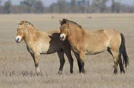

Genghis Khan Military Tactics
Genghis Khan was a great military leader. He was able to grow his empire to become the biggest contiguous empire that the world has ever seen. Genghis was a great military leader. Although ruthless at times, revolutionary nonetheless. From creating biological warfare to making trade safe on Earth for the first time in history, Genghis Khan was a very powerful and influential man.
Weapons
The weapon of choice for the Mongol army was the composite bow. From the time boys and girls were little children they were trained in physical activity related to the military. The composite bow allowed members of the military to shoot from over twice the distance of other competing militaries. It is said that the composite bow could shoot accurately from 700-800 meters away from its target. The composite bow was made from multiple layers of wood, bamboo or horn. This gave the bow a nice flexibility. Some other weapons that the Mongols used were battle axes, lances, spears, daggers, long knives, and sometimes swords.
Horses
The Mongol horse is the secret to their success. Genghis and his army were able to travel about 60-75 miles every single day. This type of transportation was unheard of in this time period. Without the horses many of Genghis's tactics wouldn't have worked. With horses Genghis was able to pull off many maneuvers that allowed him to take over many areas and people. Mongol riders could live on horseback for multiple days. This was because of the design of the saddle that the Mongols used. All Mongol soldiers were given more than one horse so that they could switch out horses and the horses would never become too tired. The horses were small but sturdy animals and without them the Mongol empire would never have become the massive empire we know it as today.

Maneuvers
Genghis Khan and his army were very clever and had many military maneuvers that they used to easily take out their enemies. Two of the most famous maneuvers include a tactic called feigned retreat and a tactic called encirclement. There were two options when doing a feigned retreat. The first option involved taking a small unit of Mongol troops and charging the enemy and then turning around and running. This would then lead the enemy into an ambush from other Mongol troops. The second route was retreating and leading the enemy into following for days. This would spread the enemy troops out and allow the Mongols to choose their battlefield. Encirclement involved a feigned retreat. When the enemy would chase the Mongols for a long time, they would get spread out. This made it easy for the Mongols to send other riders to ride around the enemy and encircle them.
Biological and Psychological Warfare
Genghis Khan was the first man to ever use biological warfare and was also an expert at inciting fear into his enemies. Genghis was building his empire at the same time that the Bubonic Plague was spreading rapidly (thanks to the Mongols). Genghis however, didn't see this is a hiccup but more as an opportunity. Genghis would use his dead soldiers or people who had fallen to the plague and launch them into cities. This would then spread the plague into those cities. Another thing Genghis did was incite fear into his enemies, or use psychological warfare. His armies would drag big objects around cities and create huge dust clouds that would make his army seem bigger than it actually was. The Mongols also had special arrows that made a shrieking whistle noise. All of these things were used as a form of psychological warfare.
Conclusion
To conclude, Genghis Khan was one of, if not the best, military leaders of his time or even of all time. From the weapons he used to the military tactics he thought of, he was able to amass the biggest contiguous empire the world has ever seen. Genghis was also in charge of many other important things, such as making the silk roads safe to travel and increasing trade. Without Genghis Khan and his brutal yet amazing tactics, our world would be much different today.